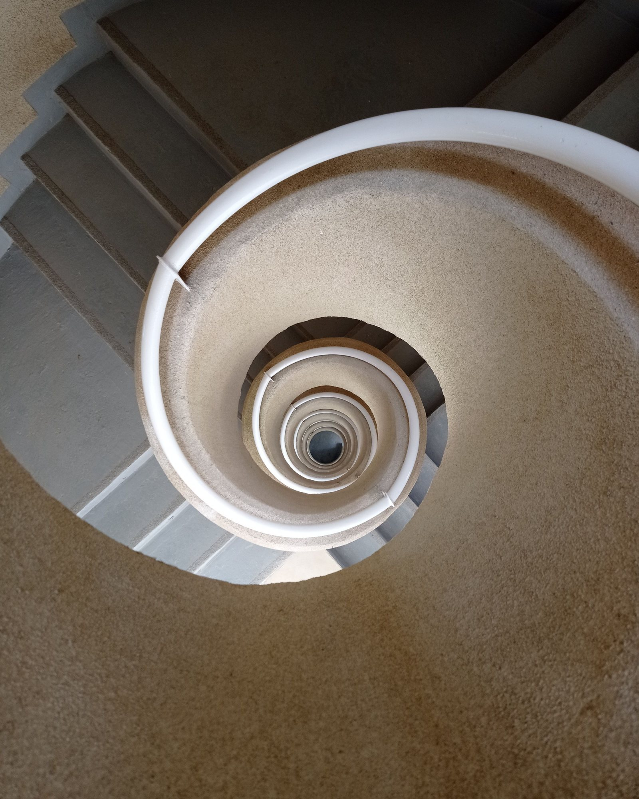
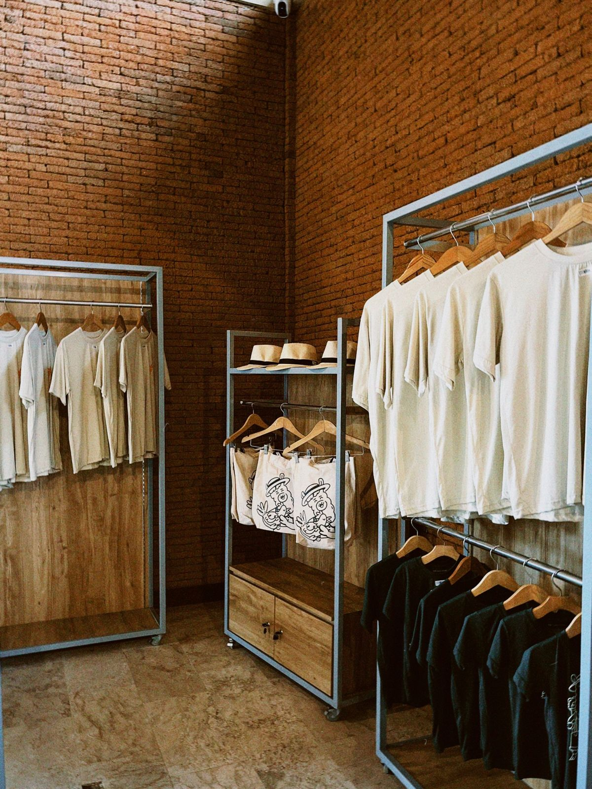
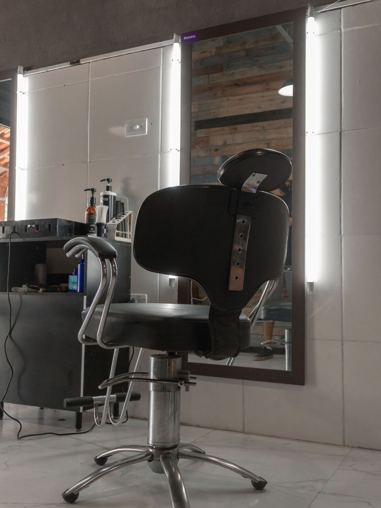
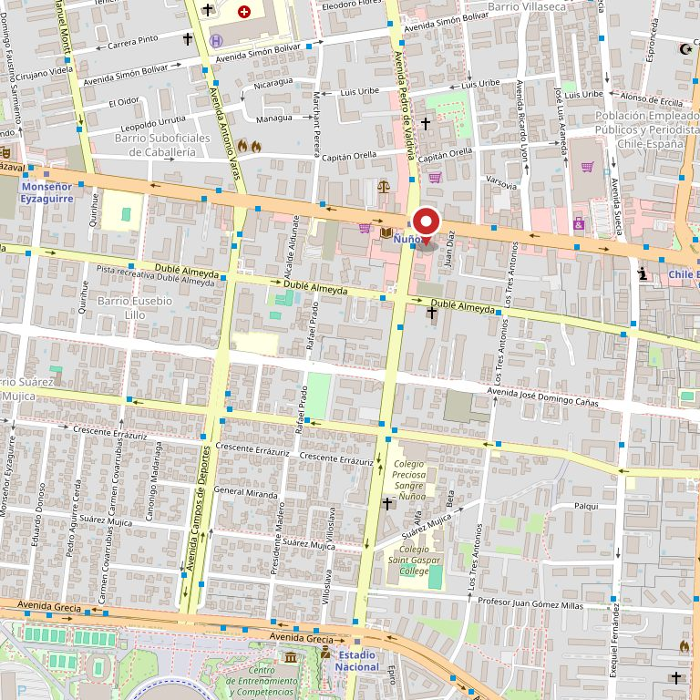

Ñuñoa · 3.900 reseñas
Un caracol se camina entero o no se camina. Falta la página que diga los rubros por nivel, el horario y por dónde se entra: tres cosas que hoy no están escritas en ninguna parte.
Ver qué hay en cada piso Escribir por WhatsApp
3.900
reseñas en Google, contadas el 27-08-2026. La nota no se muestra: acá la cifra que manda es el volumen, y es la más grande de toda esta tanda
141
locales repartidos en el edificio. El número lo publican directorios de terceros, no el caracol
2
cuentas de Instagram vivas con su nombre, verificadas el 11-09-2026. Ninguna de las dos lleva a una página del caracol
0
dominios registrados con su nombre. Probamos cuatro en NIC Chile el 11-09-2026 y ninguno existe
La pregunta de la vereda
Éste es el corte del caracol: cuatro niveles y la rampa que los une. Al lado, lo que se encuentra en cada uno. Los rubros van marcados como ejemplo a propósito — son los de un caracol de barrio, no la lista de éste. Esa la tiene la administración y se escribe en diez minutos. No hay nombres de locales: poner uno que no nos dieron sería inventarlo.
N4 Comida y servicios
Comida al paso y café, fotocopias e impresión, y oficinas chicas de atención.
N3 Oficios y arreglos
Arreglos de ropa y costura, zapatería y compostura de calzado, llaves y cerrajería.
N2 Belleza
Uñas y manicure, peluquería y barbería, estética y cosmética.
N1 Calle
Ropa y calzado, celulares y accesorios, bazar y regalos: lo que se ve desde la vereda.
La página de verdad lleva, por cada local: nombre, nivel, número de local, qué hace y su WhatsApp. Eso es lo que convierte un directorio en algo que la gente guarda en el teléfono. Hoy ese dato existe —lo tiene la administración en una planilla— y no está publicado en ninguna parte.
Lo que más se busca y menos se encuentra
Lunes a viernes
09:00 — 20:00
Sábado
10:00 — 15:00
Domingo
por confirmar
Los tres primeros datos salen de directorios de terceros (fichas de mapas y guías comerciales), no del caracol, y por eso van marcados. Es exactamente el problema que esta página resuelve: hoy el horario de un edificio con 3.900 reseñas depende de lo que alguien más anotó alguna vez.

Un edificio, muchos negocios
Un caracol no es una tienda grande: son decenas de negocios independientes que comparten un pasillo. Cada uno vende lo suyo y ninguno puede pagarse una página solo. La página del edificio sirve a los 141 al mismo tiempo, y es la única que puede contestar la pregunta con la que llega la gente: ¿acá lo tienen?
La foto es de banco y no es de este caracol: está por la forma, que es la del nombre.
«Tres mil novecientas personas escribieron cómo les fue acá adentro.
Ninguna de esas opiniones lleva a una página del caracol.»
Para los locatarios
Ésta es la parte que le interesa a la administración: la página no es un folleto del edificio, es un lugar donde cada local tiene su línea. Y la línea se llena en una vuelta al pasillo con el teléfono en la mano.
No hay precios ni promesas de plazo en esta página: no nos los dieron, y publicarlos sería inventarlos. Lo que sí está escrito es lo que se necesita para llenarla.


Estas seis fotos son de bancos de uso libre y no son del Caracol Ñuñoa Centro. Están para mostrar de qué rubros habla la página —ropa, uñas, peluquería, llaves, arreglos y comida—, que son los típicos de un caracol de barrio. Las de verdad las tienen los locatarios y son mejores.
Escribir
Ésa es la pregunta con la que llega la gente. El número que aparece en la ficha de Google es celular, así que recibe WhatsApp; puede ser el de la administración y no el de un local en particular, y así lo decimos.
En Instagram hay dos cuentas vivas a su nombre: @caracol_nunoa y @caracolnunoacentro. Ninguna de las dos lleva a una página del caracol, y entre las dos reparten el público en vez de sumarlo.

Para la administración
Una propuesta de sitio web hecha por nuestra cuenta. El Caracol Ñuñoa Centro no la encargó ni la ha revisado. Dimos por cierto sólo lo que ya es público: las 3.900 reseñas de su ficha de Google, el celular y las dos cuentas de Instagram.
El 11-09-2026 consultamos NIC Chile por cuatro dominios con su nombre y ninguno de los cuatro existe. El único caracol de la comuna que sí aparece con sitio propio es otro —el de Irarrázaval—, que no tiene relación con éste: revisamos su página entera y no nombra Pedro de Valdivia ni este teléfono.
Los rubros de cada nivel, el número de locales, el horario y la dirección. Todo va con línea punteada. El horario, la dirección y los 141 locales salen de directorios de terceros, no del caracol. No hay precios ni nombres de locales a propósito.
Escribirme por WhatsApp cristalwebcl@gmail.com Ver otros trabajos